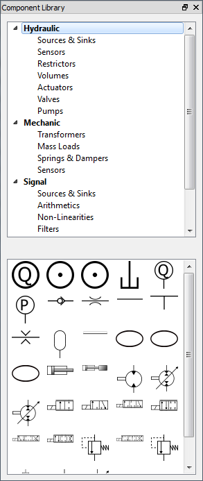

The first thing you will see when you open Hopsan is a welcome dialog. From here you can choose to create a new model, load an existing model or open the models from last session. You also have the option to always open the last session, without showing the welcome dialog. When you have made your selection, the main window will appear. It will look like the screenshot bellow (with some cosmetic differences depending on your operating system). It consists of a tool bar at the top, a workspace area in the middle, a component library to the left and a message widget at the bottom. More windows and widgets can be opened later.
{kind=link}
Toolbar
The buttons at the top of the main window is divided into five toolbars. The first one contains file operations such as creating, loading and saving models. It is also possible to export the current viewport to PDF format.

The second toolbar has buttons for editing tools, such as copy, cut, paste, undo and redo. There is also an icon that opens the global program options.

The third toolbar consists of viewport operations such as centering the viewport and zooming. It is also possible to choose whether component names and unconnected ports shall be displayed.

The forth toolbar consists of tools for modifying the model. It is possible to align, rotate and flip components. Alignments are always relative to the last selected component.

Finally, the last toolbar contains simulation controls selecting start time, time step and stop time, running a simulation, plotting and changing simulation parameters. This toolbar also has the icon for changing model specific properties. Note that after changing simulation parameters it is necessary to click outside the text field before clicking on Simulate; otherwise the changes will not apply for this simulation.

Workspace
Models are displayed in the workspace area. More than one model can be opened at the same time. In this case, each model appears in its own tab. It is possible to move around or zoom either by using the scroll wheel on the mouse, or by using toolbar buttons.
Library
Components are added to the workspace by dragging them from the library widget to the left. Standard libraries exist with hydraulic, mechanic and signal components. Each of these categories have a number of subcategories, which makes it easier to find a certain component. External libraries can be loaded either from the File menu, or by right clicking in the library and selecting "Add External Library". Unloading an external library is done in the same way.

{kind=link}
Message Widget
The message widget at the bottom is the program's way of communicating with the user. Messages are displayed in different colors depending on their purpose; black for default messages, orange for warnings, red for errors and blue for debug messages. It is possible to filter which type of message to show by clicking on the colored buttons, and to clear the entire message history. Note that this action cannot be undone! Messages of similar type can also be grouped together, to make the contents more readable.